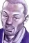

Berserk
Score: 9.26 Ranked: #3 Popularity: #13 Members: 405,389
Synopsis
In 16th-century Japan, Shinmen Takezou is a wild, rough young man, in both his appearance and his actions. His aggressive nature has won him the collective reproach and fear of his village, leading him and his best friend, Matahachi Honiden, to run away in search of something grander than provincial life. The pair enlist in the Toyotomi army, yearning for glory—but when the Toyotomi suffer a crushing defeat at the hands of the Tokugawa Clan at the Battle of Sekigahara, the friends barely make it out alive. After the two are separated, Shinmen returns home on a self-appointed mission to notify the Hon'iden family of Matahachi's survival. He instead finds himself a wanted criminal, framed for his friend's supposed murder based on his history of violence. Upon being captured, he is strung up on a tree and left to die. An itinerant monk, the distinguished Takuan Soho, takes pity on the "devil child," secretly freeing Shinmen and christening him with a new name to avoid pursuit by the authorities: Musashi Miyamoto. Vagabond is the fictitious retelling of the life of one of Japan's most renowned swordsmen, the "Sword Saint" Musashi Miyamoto—his rise from a swordsman with no desire other than to become "Invincible Under the Heavens" to an enlightened warrior who slowly learns of the importance of close friends, self-reflection, and life itself.
Background
In 2000, Vagabond won the Japan Media Arts Festival Manga Grand Prize and the 24th Kodansha Manga Award in the general category. The series won the Tezuka Osamu Cultural Prize in 2002 and has had over 82 million copies sold worldwide. Vagabond was published in English by VIZ Media under the VIZ Signature imprint from April 5, 2002 to April 21, 2015, and in large 3-in-1 omnibuses under the VIZBIG imprint from September 16, 2008 to April 21, 2015. The English release got Takehiko Inoue a nomination for the Eisner Award in the Best Writer/Artist category in 2003. It also has been published in Brazilian Portuguese by Panini Comics/Planet Manga since February 2016.
Information
- Type: Manga
- Volumes: 37
- Status: On Hiatus
- Published: Sep 3, 1998 to May 21, 2015
- Authors: Inoue, Takehiko (Story & Art), Yoshikawa, Eiji (Story)
- Genres: Action, Adventure, Award Winning
- Theme: Historical, Samurai
Characters & Voice Actors
| Miyamoto Musashi Main | Sasaki Kojirou Main |
| Honiden Matahachi Main |  Takuhan Soho Supporting |